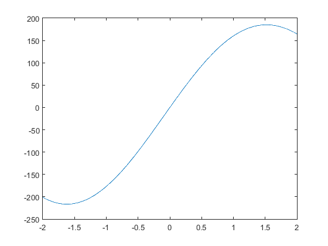

Contents
本例为无约束目标函数最大值遗传算法求解
clear
close all
clc
figure(1)
x=[-2:0.01:2];
f=200*exp(-0.05*x).*sin(x);
plot(x,f);
NIND=30;
MAXGEN=20;
PRECI=(2-(-2))/0.0001;
GGAP=0.95;
px=0.7;
pm=0.01;
trace=zeros(2,1);
FieldD=[PRECI;-2;2;1;0;1;1];
[Chrom,BaseV]=crtbp(50,PRECI);

优化阶段
gen=0;
Phen=bs2rv(Chrom,FieldD);
ObjV=200*exp(-0.05*Phen).*sin(Phen);
while gen<MAXGEN
FitnV=ranking(ObjV);
SelCh=select('sus',Chrom,FitnV,GGAP);
newChrom=recombin('xovsp',SelCh,px);
newChrom=mut(newChrom,pm);
Phen=bs2rv(newChrom,FieldD);
ObjVSel=200*exp(-0.05*Phen).*sin(Phen);
[Chrom,ObjV]=reins(Chrom,SelCh,1,1,ObjV,ObjVSel);
Phen=bs2rv(Chrom,FieldD);
gen=gen+1
[Y,I]=max(ObjV);
trace(1,gen)=Phen(I);
trace(2,gen)=Y;
end
figure(2)
plot(trace(1,:),trace(2,:),'bo')
grid on;
figure(3)
plot(1:MAXGEN,trace(2,:));
grid on;
xlabel('遗传代数：');
ylabel('界的变化：');
title('进化过程：');
bestX=max(trace(1,:));
bestY=max(trace(2,:));
disp('最优解：X=');
disp(num2str(bestX));
disp('Y=');
disp(num2str(bestY));
gen =
1
gen =
2
gen =
3
gen =
4
gen =
5
gen =
6
gen =
7
gen =
8
gen =
9
gen =
10
gen =
11
gen =
12
gen =
13
gen =
14
gen =
15
gen =
16
gen =
17
gen =
18
gen =
19
gen =
20
最优解：X=
1.7955
Y=
183.9144